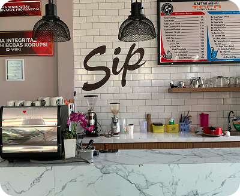
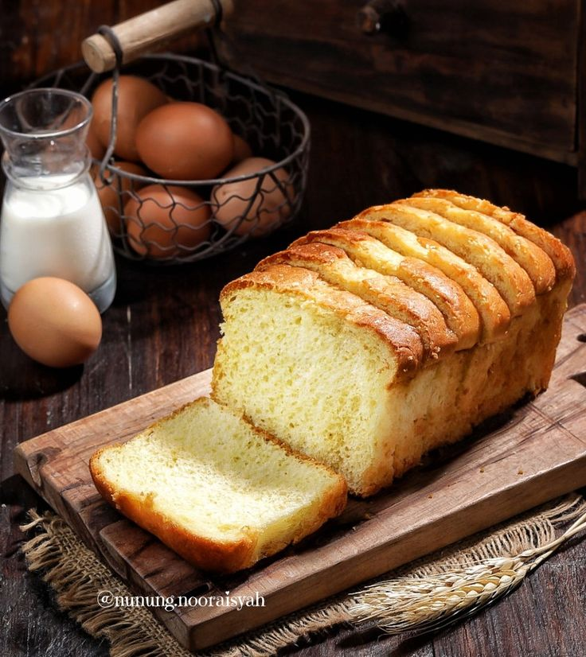

Struktur Pengelola
Penanggung Jawab Tefa Bakery And Pastry
Tim Profesional Yang Mengawasi Kualitas, Produksi, Dan Operasional Harian Di Teaching Factory Roti & Pastry
KETUA TEFA
Mengawasi seluruh arah kebijakan, visi strategis, dan tata kelola unit usaha TEFA.

MANAJER PRODUKSI
Memastikan standar resep, mutu bahan baku, dan konsistensi cita rasa bakery setiap hari.

MANAJER PEMASARAN
Mengembangkan kemitraan, promosi produk, serta pelayanan pelanggan di cafe & store.

ADMINISTRASI DAN KEUANGAN
Mengelola operasional harian, akuntansi, inventaris bahan, dan pembukuan transparan.
